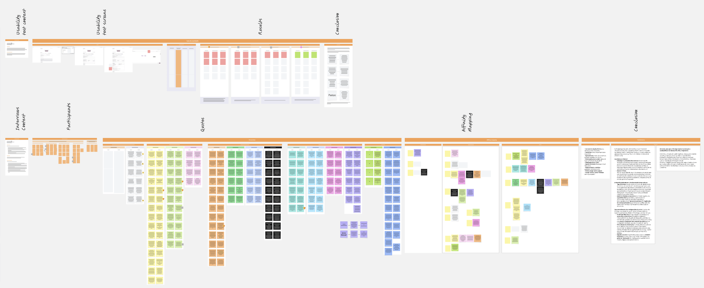
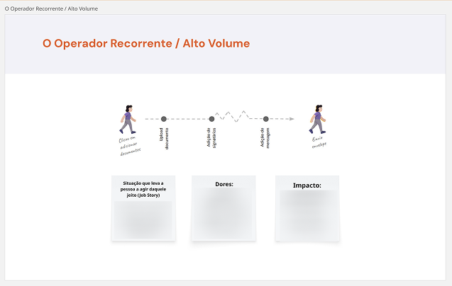
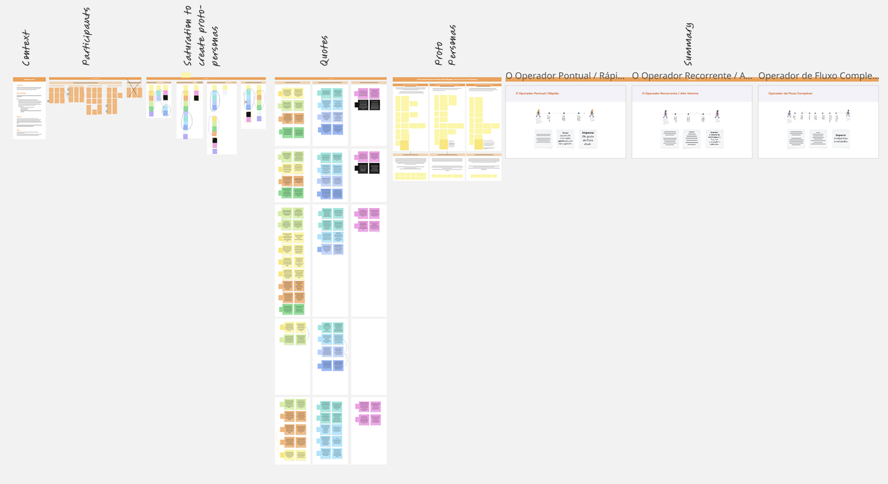
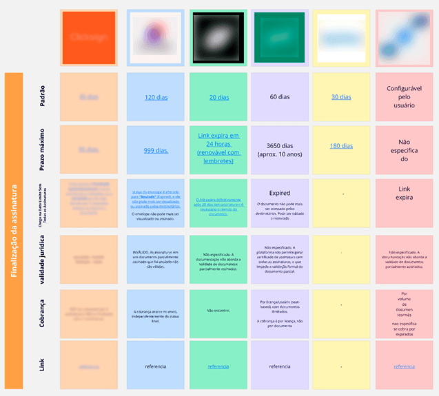
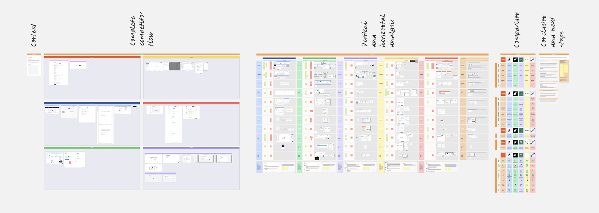
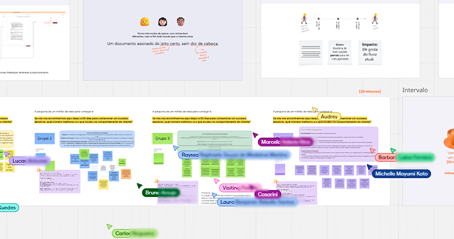
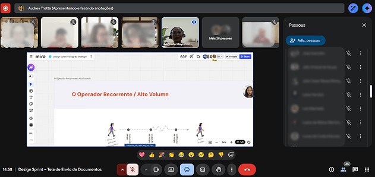
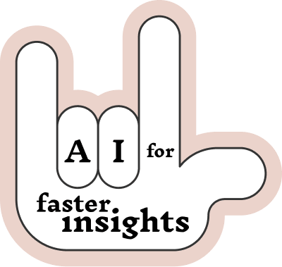
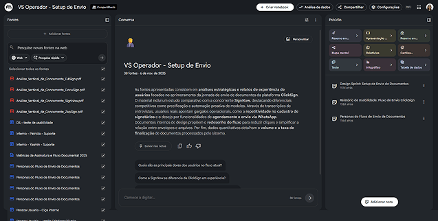

Testing a faster path for simple document sending before scaling to complex workflows
The document sending flow works well for simple use, but becomes less efficient for complex ones.
As volume or complexity increases:
How might we improve efficiency and confidence in document sending without adding more complexity to the experience?
Reduce friction in repetitive tasks and improve confidence in configuration.
Key opportunities identified:
We reframed the problem around efficiency and confidence.
Instead of exposing all configuration upfront, we explored:
| Target | Reduce interaction effort in multi-step flows |
| Expected behavior change | From multiple steps and repeated checks — to completing the process in one session, with confidence |

Discovery — usability tests and interviews across different user profiles
Synthesized from interviews and support data, the proto-personas helped the team align on who we were designing for — and why the current flow wasn't working for all of them.

Proto-persona — synthesized from interviews and support ticket analysis

Proto-personas — full overview of the 3 profiles mapped during research
Benchmarking helped identify patterns in how similar platforms handle sending flows — and where most still require too much from the user.

Comparative benchmarking — how competitors handle document sending flows

Benchmarking overview — full competitive analysis across platforms
With 35 participants from different areas of the company, the sprint was adapted to allow diverse voices to contribute. The final output was a set of Crazy 8s that guided the two concept directions.
Goal: align on the problem and explore solution directions collaboratively — before any design decisions were made in isolation.

Design Sprint — 35 participants from product, design, engineering, and beyond

Facilitating the sprint — keeping 35 people aligned across multiple sessions
To validate the experiment, we focused on behavioral signals — not just satisfaction:

AI supported execution speed. Decisions remained grounded in real user behavior and team alignment.

Research synthesis — AI-assisted clustering of interview transcripts and support ticket patterns
Instead of requiring full configuration upfront, the system guides the person step by step and reduces cognitive load.
The focus is not on adding features, but on helping the person complete the task faster with less effort.
Experiment design — conversational flow specs and interaction details
This is a focused experiment.
Speed matters. The next step is to validate whether a conversational chat is the best way to deliver it.
If people choose this path when the task is simple, that signal supports expanding the approach.
If not, we learn early and adjust direction.